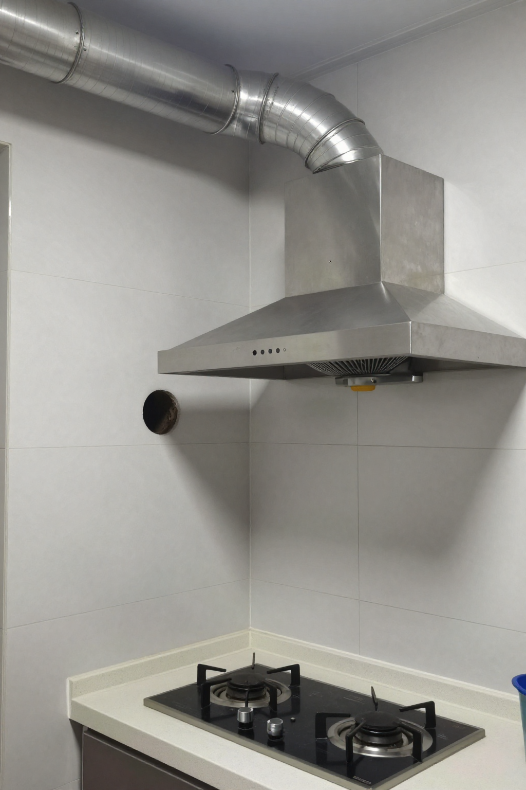
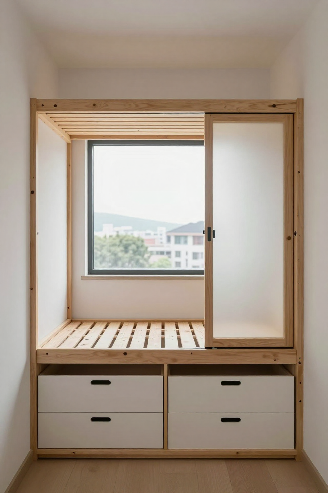

唐樓入伙前的最后一晚：旺角砵蘭街380呎，菠萝旺同周家兩年儲起嘅首期

📍 場景：旺角砵蘭街唐樓｜主講：張丹楓（8年全屋定制）｜設計：雲蕾｜業主：周生周太｜入伙前夜：9月15日｜WhatsApp 報價：852 5190 2328
序幕：砵蘭街嗰棟唐樓，380呎一家四口
旺角砵蘭街嗰棟唐樓，業主姓周，太太姓陳，兩個人住嘅單位大概380呎，開放式廚房、得一房一廳。周先生做咗十幾年物流，太太喺銀行做文員，兩個仔女都讀緊中學——買呢層樓，係佢哋儲咗十二年嘅首期。
開工嗰日我上到去量尺，嗰個廳又細又深，窗台對正後面棟大廈嘅外牆，成日曬唔到太陽。我同周先生講：「周生，你呢個廳最麻煩嘅唔係細，係『暗』。如果唔做好燈光同淺色板材，入伙之後你哋一家四口喺廳入面，成日都會覺得壓抑。」周先生當時點點頭，話：「師傅你哋點做就點做，最緊要實淨，唔好貪平。」
第一幕：開放式廚房嘅油煙，140mm孔要打兩次膠
開放式廚房喺香港越嚟越流行，但好多街坊都忽略咗一個最基本嘅問題——抽油煙機嘅風量同埋喉嘅走位。周太鍾意煮飯，特別係廣東人嘅蒸魚、蒸水蛋。我同佢講：「如果你裝傳統中式抽油煙機，風量起碼要每分鐘一千五以上，風喉盡量唔好轉彎超過兩個，否則回風情況會好嚴重。最好直接排出窗外，唔好走公共喉。」
但呢棟唐樓嘅外牆厚度超過60公分——一般嘅塑膠風喉根本穿唔過去，要用不鏽鋼硬喉，再加駁口膠封死。最後我哋喺廚房背後嘅高位牆身，開咗一個140mm嘅圓孔，用不鏽鋼蛇喉駁出去，再喺外牆做咗個不鏽鋼防水罩。
「師傅用電鑽開嗰個孔，心都離一離。」
「周太，你放心，孔開完之後我會用玻璃膠同硅膠封兩次，再貼返外牆紙皮磚。落大雨都唔會入水。」
「師傅你講嘢真係老練，我哋銀行後生仔咩都唔識。」

第二幕：房間細但要分區，地台承重800公斤
成個單位得一間房，但兩個仔女已經十幾歲，唔可以再共處一間房。我哋最後嘅方案係：喺廳嘅一角，做咗一個高架地台，升高40公分，底下做鞋櫃同雜物櫃，面上就係大女嘅床位。床位旁邊用磨砂玻璃同鋁框做間隔——唔係完全封死，但視覺上已經分隔開。
床位下面嘅櫃，我特別用咗氣壓桿鉸鏈。小朋友打開櫃門唔使扶住，唔會夾到手。呢個細節唔係所有師傅都會做，但我哋呢行做咗二十幾年，點都要為用家諗多一步。
「師傅，咁樣做實唔實淨？兩個細路喺上面跳會唔會塌？」
「你睇呢度——地台嘅龍骨用2x4嘅杉木，每30公分一條，底板用18mm夾板，面板用12mm高密度板，再加一層防潮墊。成個地台承重超過800公斤，兩個細路跳到幾時都冇問題。」
「OK，咁就照做。」

第三幕：入伙前一晚嘅小插曲，兩棵菠萝同涼茶
所有嘢做完嗰日，係九月十五號晚黑——即係入伙前一晚。我哋喺度做最後清潔，抹地、抹櫃、抹玻璃。周太特登買咗兩個菠蘿返嚟——香港人入伙嘅習俗，菠蘿葉擺喺門口，取其「旺」嘅諧音。
周先生行過嚟遞咗支涼茶畀我，話：「師傅，我哋住唐樓咁多年，從來冇諗過裝修可以咁細緻。以前嘅師傅做完就走，唔會同我哋解釋咁多嘢。你今晚講嘅嘢，我哋兩個都學到好多。」我飲咗一口涼茶，話：「周生，唔使客氣。其實裝修呢家嘢，最重要唔係幾靚，係幾『啱』。你哋一家四口，380呎，要住得落、住得好——就要靠每一寸都用得其所。我哋做咗二十幾年，最希望就係業主入伙嗰日，笑容係發自內心嘅。」
尾聲：點解老師傅值錢，口碑論
後生仔成日問我：「師傅，而家啲新式裝修公司都用3D圖、AI設計，你哋呢種老派師傅仲有冇市場？」我答：「有。但要識變。」我哋會用3D圖畀業主睇效果，會用AI幫手排尺，但我哋唔會畀機器代替咗人嘅經驗。例如油煙機嘅風喉、例如地台嘅承重、例如香港唐樓嘅外牆開孔——呢啲嘢，無十年八年以上嘅實戰經驗，根本判斷唔到。
周太臨走前同我講：「師傅，我哋有個同事下個月都準備裝修，到時介紹佢嚟搵你。」我笑笑：「多謝周太。」喺香港做裝修，最值錢嘅唔係手藝，係口碑。
我同雲蕾講呢個故事時，雲蕾話：「寫低佢啦，我哋寫嘅『博主講古』就係要記住呢啲。下一個一個人坐喺度度尺時，我就擺呢篇出嚟睇，提醒自己：每一個單位，都係一個家嘅兩年起。」
「周生臨走前嗰句話，我會記住：380呎裝得下笑聲，裝不下冷漠。」
「記住啦，丹楓。我哋下個月繼續去砵蘭街——呢棟樓六樓嗰戶都打電話嚟問咗。」
| 項目 | 規格 | 價錢 |
|---|---|---|
| 開放式廚房不鏽鋼蛇喉+防水罩 | 140mm孔+雙膠封+外牆紙皮磚 | $7,500 |
| 高架地台+鞋櫃+雜物櫃+床位 | 2x4杉木+18mm夾板+12mm高密度板+防潮墊 | $18,000 |
| 磨砂玻璃鋁框分床間隔 | 鋁框+氣壓桿鉸鏈 | $6,500 |
| 全屋淺色板材+最後清潔 | 耐潮板+清垃圾 | $9,000 |
| 總計 | $41,000 |
呢個係2026年9月報價，板材五金價會浮動。記住三句：油煙不鏽鋼硬喉要雙膠封、地台龍骨2x4杉木每30公分一條、唐樓外牆60cm要打兩次膠。
❓ 唐樓入伙五問
Q1：唐樓外牆厚過60cm，油煙機點走喉？
用不鏽鋼硬喉，唔好貪平用塑膠蛇喉。開140mm圓孔，玻璃膠加硅膠封兩次，再喺外牆做不鏽鋼防水罩、貼返紙皮磚。落大雨都唔入水。
Q2：地台做幾高先承重夠？
2x4杉木龍骨，每30公分一條，底板18mm夾板，面板12mm高密度板，再加防潮墊。成個地台承重超過800公斤，兩個細路喺上面跳都冇問題。
Q3：磨砂玻璃鋁框點做分床？
磨砂玻璃加鋁框做間隔，唔完全封死但視覺分區。氣壓桿鉸鏈，小朋友打開櫃門唔使扶住唔會夾手，係唐樓細房間最實用做法。
Q4：點解入伙要擺菠蘿？
香港人入伙習俗，菠蘿葉擺喺門口取其「旺」嘅諧音。兩個菠蘿一支涼茶，係香港裝修最溫度嘅一句。
Q5：點解老派師傅仲有市場？
3D圖同AI排尺我哋都用，但唐樓外牆打孔、地台承重、油煙風喉——呢啲嘢無十年八年實戰經驗判斷唔到。最值錢嘅唔係手藝，係口碑。
提示：圖片為 SiliconFlow Z-Image-Turbo AI 生成的場景示意圖，不是實際住戶單位。價錢為2026年9月故事報價，實際以度尺為準。